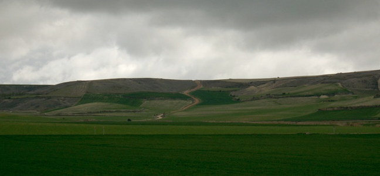

Why should I use this plugin?
Slides can contain images, video.
Uses CSS transitions for slide animation.
Small file size, fully themed, simple to implement.
Browser support: Firefox, Chrome.
Unlimited Images.
Step 1: Link required files
First and most important, the jQuery library needs to be included (no need to download - link directly from Google). Next, download the package from this site and link the "displaceimage" CSS file (for the theme) and the "displaceimage" Javascript file.
<!-- jQuery library (served from Google) -->
<script src="//ajax.googleapis.com/ajax/libs/jquery/1.6.2/jquery.min.js"></script>
<!-- displaceimage Javascript file -->
<script src=" js/displaceimage.js"></script>
<!-- displaceimage CSS file -->
<link href=" css/displaceimage.css" rel="stylesheet" />
Step 2: Create HTML markup
Create a <div class="marco" <ul > element, with a <li> for each slide. Slides can contain images, video
<div class="marco">
<ul>
<li><img src="/img/1.jpg" /></li>
<li><img src="/img/2.jpg" /></li>
<li><img src="/img/3.jpg" /></li>
<li><img src="/img/4.jpg" /></li>
<li><img src="/img/5.jpg" /></li>
<li><img src="/img/6.jpg" /></li>
</ul>
</div>
Step 3: Call the displaceimage
Call .displaceimage() on <ul class=".marco">. Note that the call must be made inside of a $(document).ready() call, or the plugin will not work!
$(document).ready(function(){
$('.marco').displaceimage();
});
Demo
- 